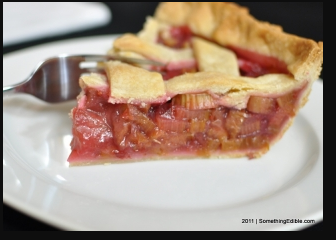

Description

Ingredients:
- 4 cups chopped rhubarb
- 3/4 cup sugar
- 6 Tablespoon flour
- 1 Tablespoon butter
- Butter Crust
Optional - to taste
Steps:
- 1. Preheat oven to 450 degrees F.
- 2. Combine sugar and flour. Sprinkle 1/4 of it over pastry in pie plate.
- 3. Heap rhubarb over this mixture. Sprinkle with remaining sugar and flour. Dot with butter.
- 4. Cover with top crust, place pie on lowest rack, and bake for 15 minutes.
- 5. Reduce oven temperature to 350 degrees F and continue baking for 45 minutes.
- 6. Fin. Serve Warm or Cold or with Whipping Cream.